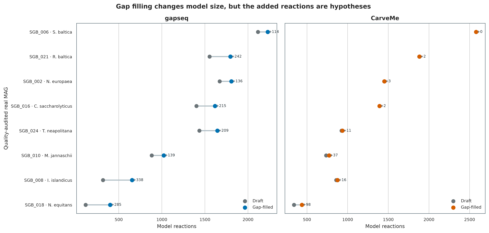
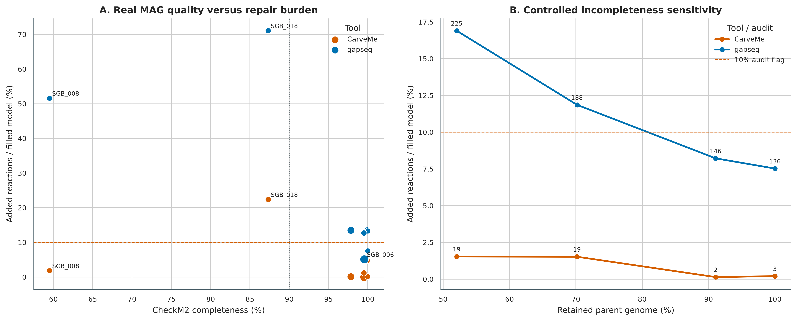
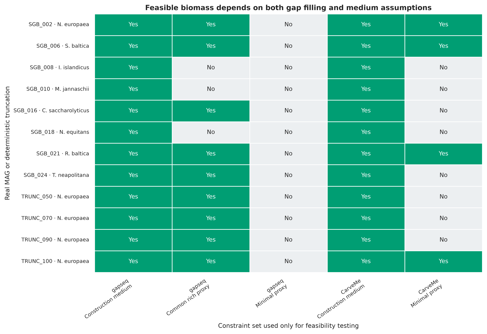
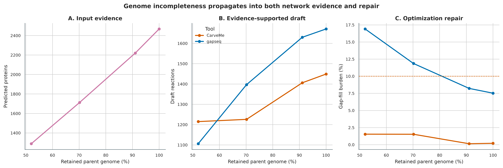
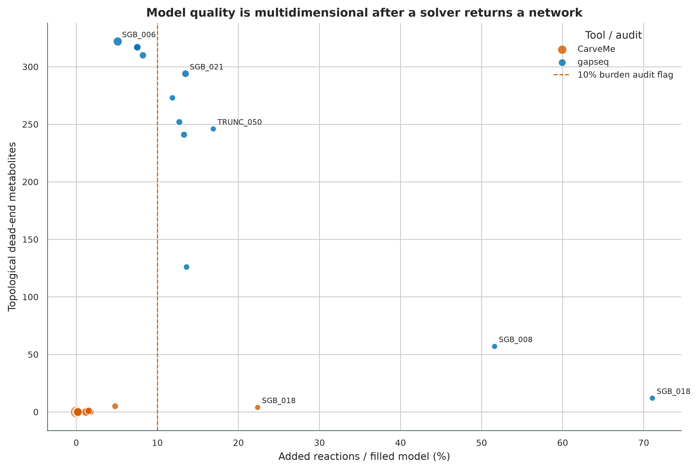
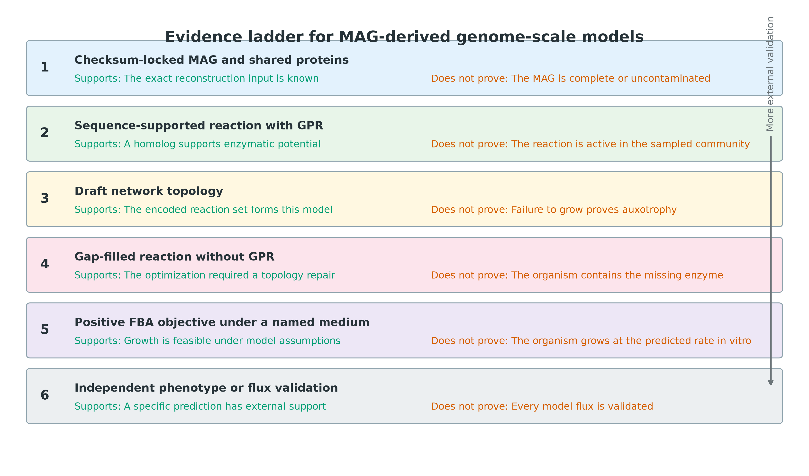

options(timeout = 600)
base_url <- "https://raw.githubusercontent.com/petemeng/metagenomics-best-practices/e219a2cd01609cc208a89e291cbd363ed7f2fbd8/"
files <- read.delim(paste0(base_url, "examples/60/files.tsv"))
for (i in seq_len(nrow(files))) {
path <- files$path[i]
dir.create(dirname(path), recursive = TRUE, showWarnings = FALSE)
if (!file.exists(path)) {
download.file(paste0(base_url, files$source[i]), path, mode = "wb")
}
}基因组尺度代谢模型：gapseq / CarveMe
先给结论：基因组尺度代谢模型（genome-scale metabolic model，GEM）不是“把 MAG 注释得更漂亮”，而是把有基因证据的反应、化学计量关系、反应方向、交换边界、培养基和 biomass objective 组合成可求解的约束系统。自动重建最值得报告的并非一个最大生长数值，而是三类不确定性：哪些反应有 gene–protein–reaction（GPR）证据、为了得到可行 biomass 解补了多少无 GPR 反应、结论会不会随 MAG 完整度和培养基假设改变。
这里使用 PRJEB52977 的 ERR9765746/ERR9765747 真实 mock-community 数据得到的 8 个非冗余 MAG，加上 Nitrosomonas europaea MAG 的 50%、70%、90% 和 100% 确定性 contig-retention 对照；两套工具共享同一批 Prodigal proteins。gapseq 2.1.0 和 CarveMe 1.6.6 各生成固定 draft 与独立 gap-filled model，共 48 个 SBML 模型，随后完成 168 次 medium/no-uptake FBA audit。TRUNC_100 与 parent 的蛋白序列完全相同，用来检查 reaction structure 是否确定性复现。所有 FBA 数值都解释为 constraint feasibility，不写成实测 growth rate 或 flux。
重要算力、磁盘与数据库门槛
只核验 data/small/60-genome-scale-models-frozen/、从压缩 SBML 重算表格并重画 6 组图，建议 4 CPU、8 GB RAM、5 GB 可用磁盘，耗时约 3–8 分钟。完整重建会下载 gapseq sequence DB v1.5：压缩文件约 362 MB，解压后约 1.5 GB、82,560 个 reference FASTA；CarveMe 的 universes、DIAMOND database 和 media library 随锁定环境安装。
12 个 inputs 并行运行时建议 32 CPU、64 GB RAM、25 GB 高速磁盘和 30–120 分钟。命令采用 8 个并行 jobs、每个 4 threads；若只有工作站，把 --jobs 降到 2，并先跑 SGB_002 TRUNC_050 TRUNC_100。没有服务器时，直接使用固化的 48 个 SBML、medium files、summary tables 和 resource ledgers；全量同源搜索放到 HPC 或云端批处理。
这组小 MAG 的成功步骤中，单任务峰值常驻内存最高为 1,444,584 KB，最长 wall time 为 1,161.3 s；并行峰值取决于同时运行的 jobs。真实人群 MAG 更大、数据库缓存与 solver 行为也不同，部署时仍按上述保守门槛预留资源。
提示先确定这一点
培养基边界和补缺反应都会影响预测；模型可行不等于真实生长或通量已被测量。
代谢模型预测生长，依赖哪些假设？
CarveMe 原始论文的 Figure 1 对比 bottom-up reconstruction、top-down carving 与 context-dependent gap filling：前两者回答“基因组支持什么反应”，补洞则回答“为了在指定条件下满足 biomass 约束，最少还要假设什么” (Machado 等 2018年)。这里保留这个分层，先固定 CarveMe draft，再调用独立 gapfill 命令；不把两次独立 carving 的差异误算成补洞反应。
gapseq 论文用 enzyme activity、carbon-source utilization、fermentation products 和 community interactions 的外部 phenotype 数据评估自动模型，并强调 sequence homology、pathway topology 与 reaction-score-aware gap filling 的联合贡献 (Zimmermann 等 2021年)。这里不复刻其中某个 benchmark 百分比，而是重建审稿时更常用的审计面板：model size、gap-fill burden、medium sensitivity、no-uptake leakage、MAG quality 和 controlled incompleteness。

下载本例数据与分析代码
数据与代码清单列出了本例的输入表、分析脚本和环境文件（约 16.9 MiB）。本清单不含原始 FASTQ 或大型数据库；是否需要它们取决于下文的分析起点。清单中的已计算结果仅供核对；读取结果表不等于重新运行统计模型或上游工具。
在新建文件夹中运行下面的 R 代码，下载完成后即可按正文中的相对路径读取文件。需要核验文件版本时，可使用带完整性检查的下载脚本。
先确认数据来源与运行边界
真实输入与固定身份
主输入来自 PRJEB52977 uneven mock study (Meslier 等 2022年)。第 45 步得到的 dRep representatives 与第 46 步的 GTDB-Tk R232 taxonomy ledger 都有 payload SHA-256；准备脚本先核对二者，再解压 8 个 MAG。两套 reconstruction tools 不各自调用 gene caller，而是共享 Prodigal 2.6.3 -p meta 的 proteins，避免 gene-calling difference 混入工具比较。
| Genome | GTDB R232 species | Domain | CheckM2 completeness | Contamination | 设计作用 |
|---|---|---|---|---|---|
| SGB_002 | Nitrosomonas europaea | Bacteria | 100.00% | 0.04% | truncation parent / exact control |
| SGB_006 | Shewanella baltica | Bacteria | 99.55% | 6.95% | contamination stress |
| SGB_008 | Ignicoccus islandicus | Archaea | 59.51% | 0.00% | incompleteness stress |
| SGB_010 | Methanocaldococcus jannaschii | Archaea | 99.92% | 0.12% | methanogenic archaeon |
| SGB_016 | Caldicellulosiruptor saccharolyticus | Bacteria | 99.99% | 0.02% | anaerobic heterotroph |
| SGB_018 | Nanoarchaeum equitans | Archaea | 87.33% | 0.21% | reduced symbiont |
| SGB_021 | Rhodopirellula baltica | Bacteria | 97.85% | 3.87% | large genome |
| SGB_024 | Thermotoga neapolitana | Bacteria | 99.50% | 0.45% | thermophilic heterotroph |
Seed 59002 固定 contig shuffle；50%、70%、90%、100% targets 的实际 retained bases 为 52.036793%、70.175068%、91.069344% 和 100%。另设绘图 seed 20260760。TRUNC_100 与 SGB_002 的 sequence-set hash 和 protein-sequence multiset hash 必须相同，但 identifiers 保留各自 genome prefix，防止并行结果串样。
数据库与 solver 锁
| 资源 | 锁定版本 | 身份与规模 |
|---|---|---|
| gapseq | 2.1.0, source commit 53f3b612...f328a7d2 |
env/gapseq-linux-64.lock |
| gapseq sequence DB | v1.5, UniProt 2026_01 (Zimmermann 和 Waschina 2026年) | Zenodo 20446806；Bacteria SHA-256 ec669d56...e1afeb；Archaea 62e3cf8e...df51c7 |
| CarveMe | 1.6.6 | Bioconda package SHA-256 fb1ebf83...e00a99 |
| CarveMe universe | 1.6.6 bacteria + archaea | exact compressed universe SHA-256 in manifest |
| Sequence aligner | DIAMOND 2.2.4 / 2.1.13 | tool-specific locked environments |
| LP/MILP solver | GLPK 5.0 / SCIP 10.0.3 | CarveMe SCIP limit 600 s, relative gap 0.001 |
| Exchange definitions | gapseq media CSV / CarveMe media_db.tsv |
exact files included in frozen evidence |
安装精确环境、下载数据库并内联作图函数
conda create --name metagenome-gapseq-2026.08 \
--file env/gapseq-linux-64.lock
conda create --name metagenome-carveme-2026.08 \
--file env/carveme-linux-64.lock
conda create --name metagenome-drep-2026.07 \
--file env/drep-linux-64.lock
conda run -n metagenome-gapseq-2026.08 gapseq test
conda run -n metagenome-carveme-2026.08 \
python -c 'import carveme; print(carveme.__version__)'
conda run -n metagenome-carveme-2026.08 \
python -c 'from reframed.solvers import get_default_solver; print(get_default_solver())'
# 大数据库不进入 Git；download 后自动核验 bytes、MD5 与 SHA-256
db/download_db.sh gem-install
db/download_db.sh gem-verify
column -ts $'\t' data/small/60-gem-database-manifest.tsvinstall.packages(c("ggplot2", "dplyr", "readr", "tidyr", "scales", "patchwork"))
library(ggplot2); library(dplyr); library(readr); library(tidyr); library(scales)
set.seed(20260760)
pal_pub <- c(
"gapseq" = "#0072B2", "CarveMe" = "#D55E00",
"Feasible" = "#009E73", "Audit" = "#E69F00",
"Leak" = "#CC79A7", "Gray" = "#6B7478",
"Light" = "#EDF2F4", "Dark" = "#263238"
)
scale_color_pub <- function(...) scale_color_manual(values = pal_pub, ...)
scale_fill_pub <- function(...) scale_fill_manual(values = pal_pub, ...)
theme_pub <- function(base_size = 12) {
theme_bw(base_size = base_size) + theme(
panel.grid.minor = element_blank(),
panel.grid.major = element_line(color = "#ECEFF1", linewidth = 0.3),
axis.text = element_text(color = "black"),
legend.key = element_blank(),
strip.background = element_rect(fill = "#EDF2F4", color = NA),
plot.title.position = "plot",
plot.caption = element_text(color = "#455A64", hjust = 0)
)
}
save_pub <- function(plot, file_base, width = 205, height = 145,
units = "mm", dpi = 350) {
dir.create(dirname(file_base), recursive = TRUE, showWarnings = FALSE)
ggsave(paste0(file_base, ".pdf"), plot, width = width, height = height,
units = units, device = cairo_pdf, bg = "white")
ggsave(paste0(file_base, ".png"), plot, width = width, height = height,
units = units, dpi = dpi, bg = "white")
ggsave(paste0(file_base, ".tiff"), plot, width = width, height = height,
units = units, dpi = dpi, compression = "lzw", bg = "white")
invisible(plot)
}先核验保存证据
data/small/60-genome-scale-models-frozen/ 保存 12 份共享 protein FASTA、48 个压缩 SBML、原始命令与 resource logs、6 份 gapseq media、CarveMe media library、environment locks、database manifest/audit、所有汇总表和重画脚本。1.5 GB sequence DB 与 CarveMe universe/DIAMOND database 不重复打包，但其 bytes、checksums、release 和 extracted-file counts 都被锁定。
FROZEN="$PWD/data/small/60-genome-scale-models-frozen"
sha256sum -c "$FROZEN/file-checksums.sha256"
column -ts $'\t' "$FROZEN/input-mag-ledger.tsv" | head
column -ts $'\t' "$FROZEN/gapfill-burden.tsv" | head
column -ts $'\t' "$FROZEN/determinism-control.tsv"
cat "$FROZEN/summary.json"准备 8 个 MAG、4 个 sensitivity inputs 和共享 proteins
从 MAG 到 GEM 至少经过五层对象
| 层级 | 典型对象 | 可以支持的结论 | 仍然不能证明 |
|---|---|---|---|
| MAG | contigs、quality、taxonomy | 该 bin 的序列身份与质量 | 每个基因都属于同一细胞 |
| Gene evidence | proteins、homology hits | 某 enzyme family 可能存在 | 该酶在目标条件下表达或有活性 |
| GPR | gene–protein–reaction rule | 反应与基因证据的逻辑连接 | 反应方向与通量已被测量 |
| Network | metabolites、reactions、bounds | 一组化学计量约束 | 网络在真实细胞中唯一正确 |
| Simulation | medium、objective、solver | 在这些假设下存在可行/最优解 | 预测值等于体外或原位速率 |
最关键的分界是“模型里有反应”不等于“基因组里有支持该反应的基因”。Draft 中也会有 biomass、exchange、demand、spontaneous 或 template reactions；gap filling 新增的反应往往没有 GPR。反应表必须同时保存 GPRBackedReactions 和 NoGPRReactions。
MAG 质量会同时制造 false absence 与 false completion
不完整 MAG 会丢失 genes、GPR 和 reactions，促使 gap filling 加入更多无基因证据的连接；污染则可能把两个 organism 的 enzymes 放进同一个 network，造成虚假的 pathway completion。面板故意包含：
SGB_008：Ignicoccus islandicus，CheckM2 completeness 59.51%，用于 incomplete archaeal MAG stress；SGB_006：Shewanella baltica，contamination 6.95%，用于 composite-network risk；SGB_018：Nanoarchaeum equitans，reduced obligate symbiont，提醒“无法独立 biomass”可能是真实生态依赖；TRUNC_050/070/090/100：同一 parent 的确定性 contig retention，隔离 genome completeness 对模型的影响。

实际重建中，gapseq 的中位 repair burden 为 13.00%，12 个输入中 8 个超过 10% 审计线；CarveMe 的中位数为 0.69%，只有宿主依赖型 SGB_018 超过该线（22.37%）。这不是工具准确率排名：两者的 reaction universe、评分、biomass 和培养基都不同；它说明“补洞规模”必须和工具、条件及基因证据一起报告。
ROOT="$PWD"
WORK="$ROOT/work/article60"
GAPSEQ_ENV="$HOME/miniconda3/envs/metagenome-gapseq-2026.08"
CARVEME_ENV="$HOME/miniconda3/envs/metagenome-carveme-2026.08"
PRODIGAL_ENV="$HOME/miniconda3/envs/metagenome-drep-2026.07"
SEQDB="$ROOT/db/gem-cache/gapseq-seqdb-v1.5/seqdb"
python3 scripts/prepare_article60_gem.py \
--project-root "$ROOT" \
--work-dir "$WORK" \
--prodigal-env "$PRODIGAL_ENV" \
--gapseq-env "$GAPSEQ_ENV" \
--carveme-env "$CARVEME_ENV"
column -ts $'\t' "$WORK/input-mag-ledger.tsv"
column -ts $'\t' "$WORK/protein-id-audit.tsv"每个 protein identifier 都被改成 genome_id__original_id，并检查全局唯一性。准备过程拒绝以下情况：Article 45 representative payload SHA-256 不匹配、GTDB release 不是 R232、输入数不是 8+4、protein IDs 重复、TRUNC_100 无法精确重现 parent protein sequences。
忠实复现后，先检查“补了什么”
自动工具论文通常用 phenotype benchmark 展示总体性能，但自己的 MAG 仍需逐模型检查：
- draft 与 filled 的 reaction set difference；
- 每个 added reaction 的 equation、reversibility、compartment 和 database annotation；
- added reaction 是否有 GPR，是否只靠 transporter/exchange 解锁；
- biomass precursors 缺失是否来自 MAG incompleteness、gene calling 或 database namespace；
- 多个等价 repair sets 是否给出相同 phenotype。
本次 CarveMe 特意避免再次运行 carve -g LB 生成第二个独立 optimum；固定 draft 后再 gapfill，要求 RemovedReactions == 0。gapseq 也以 draft RDS 为唯一输入执行 fill。这样 AddedReactions 才能解释成相对于固定 draft 的 repair set。
24 组 draft–filled 差分均保留全部 draft reactions，新增反应全部没有 GPR；因此它们只能进入 repair-hypothesis 清单。9 个高负担模型既包括 gapseq 的不完整/截短输入，也包括多个高完整度输入及 CarveMe 的 SGB_018，说明不能用一个全局阈值替代逐反应审计。
固定 draft，再独立 gap filling
Gap filling 是“最小修复”，不是新基因发现
若 draft 在指定 medium 下无法达到最小 biomass，gap filling 从 reaction universe 中选择一组 \(A\)，使修复后的网络可行，并最小化代价：
[ A {jA} w_j y_j, ]
其中 \(y_j\) 表示是否加入 reaction \(j\)，\(w_j\) 可由 gene evidence、pathway context 或默认 penalty 决定。这个问题通常有多个等价或近等价解；medium 越宽松，模型越容易找到生长路径，但它也更少测试具体 auxotrophy。新增 reaction 的正确表述是“optimization-required repair candidate”，不能倒推为“MAG 中存在该 enzyme”。
本次定义：
[ B_g = 100, ]
并用 \(B_g>10\%\) 作为需要人工复核的 audit flag，不是普适质量标准。所有新增和删除 reaction IDs 都从两个已固定 SBML 的集合差得到。
python3 scripts/run_article60_gem.py \
--project-root "$ROOT" \
--work-dir "$WORK" \
--gapseq-env "$GAPSEQ_ENV" \
--carveme-env "$CARVEME_ENV" \
--seqdb "$SEQDB" \
--jobs 8 \
--threads-per-job 4
column -ts $'\t' "$WORK/model-plan.tsv"
column -ts $'\t' "$WORK/command-log.tsv" | head
cat "$WORK/run-contract.json"核心命令等价于：
# gapseq bacterial branch: evidence -> fixed draft -> ALLmed repair
gapseq find -p all -t Bacteria -b 200 -i 0 -c 75 \
-K 4 -A diamond -O -D "$SEQDB" -v 1 -f gapseq/SGB_002 SGB_002.faa
gapseq find-transport -b 50 -i 0 -c 75 -K 4 -A diamond \
-v 1 -f gapseq/SGB_002 SGB_002.faa
gapseq draft -r SGB_002-all-Reactions.tbl -t SGB_002-Transporter.tbl \
-p SGB_002-all-Pathways.tbl -b Bacteria -n SGB_002 \
-u 200 -l 100 -f gapseq/SGB_002
gapseq fill -m SGB_002-draft.RDS \
-n "$GAPSEQ_ENV/share/gapseq/dat/media/ALLmed.csv" \
-b 100 -k 0.01 -z glpk -v -f gapseq/SGB_002/filled-permissive
# CarveMe：同一 protein FASTA 只做一次 DIAMOND；gapfill 作用于固定 draft
diamond blastp -d bigg_proteins.dmnd -q SGB_002.faa \
-o SGB_002-diamond.tsv --more-sensitive --top 10 --quiet --threads 4
carve --diamond -u bacteria --fbc2 --solver scip \
-v -o SGB_002-draft.xml SGB_002-diamond.tsv
gapfill -m LB -u bacteria --fbc2 -v \
-o SGB_002-filled-LB.xml SGB_002-draft.xmlArchaea 自动切换到 gapseq -t Archaea -m Archaea -b Archaea 与 CarveMe -u archaea。SGB_008 使用 autotrophic.csv -e highH2，SGB_010 使用官方 methanogen tutorial 的 MM_anaerobic_CO2_H2.csv -e highH2，SGB_018 使用 meerwasser.csv 作为 marine host-rich proxy。最初把细菌型 LBmed.csv、继而把单一 ALLmed.csv 强加给全部 Archaea 时，三个初始补洞均不可行；这些失败日志被保留，最终模型只采用预先记录的 ecology-aware profiles。批处理具备 resume：只有 required output 非空才跳过；任何一步 return code 非零都不会写 .article60-models-complete。
培养基敏感性优先于一个“漂亮生长率”

修复后模型在各自 construction medium 中 24/24 达到阈值；换成 post-hoc proxy 后，gapseq 在共同 rich proxy 中为 9/12、在 MM_glu 中为 0/12，CarveMe 在 M9 中为 4/12。全部 48/48 no-uptake audits 均未产生正 biomass。由同一模型在不同约束下得到不同结论，正是培养基敏感性，而不是可忽略的数值波动。
宽松 medium 下可行而 minimal proxy 下不可行，可能来自真实 auxotrophy、缺失 transporter、MAG 不完整、biomass composition 或 gap-fill medium bias。正确升级路线是：
- 用实验配方或环境化学测量重建 medium；
- 显式报告 exchange bounds 与单位；
- 先跑 feasibility，再做 FVA/pFBA，检查 alternative optima；
- 对关键 auxotrophy 做 gene/neighborhood 与培养实验验证；
- 社区模型再增加 abundance、shared compartment 和 uptake-capacity assumptions。
统一解析、FBA audit、作图与保存
FBA 是带假设的可行域优化
设 \(S \in \mathbb{R}^{m\times r}\) 为 metabolite × reaction 的 stoichiometric matrix，\(v\) 为 reaction flux，稳态近似为：
[ Sv=0. ]
培养基、反应方向和容量写进上下界：
[ _j v_j u_j, ]
常见 FBA 以 biomass reaction 为目标 (Orth 等 2010年)：
[ _v c^Tv Sv=0,; vu. ]
因此正的 biomass objective 只说明：在固定 stoichiometry、bounds、exchange set、biomass composition、steady-state assumption 和 objective 下，solver 找到一个可行解。它没有使用酶浓度、转录调控、动力学参数或群落空间结构，也不能把任意单位的 objective value 直接写成样本中的生长速率。
培养基是模型条件，不是装饰参数
gapseq 与 CarveMe 使用不同 reaction namespace 和内置 medium vocabulary：前者以 ModelSEED-style IDs 为主，后者以 BiGG IDs 为主。这里的 standardized reconstruction conditions 是：
| Tool | Draft reconstruction | Gap-fill medium | Post-hoc sensitivity |
|---|---|---|---|
| gapseq 2.1.0 | sequence + pathway + transporter evidence；Archaea 固定 -m Archaea |
Bacteria: ALLmed.csv; SGB_008: autotrophic.csv + highH2; SGB_010: MM_anaerobic_CO2_H2.csv + highH2; SGB_018: meerwasser.csv |
common ALLmed.csv, MM_glu.csv, no uptake |
| CarveMe 1.6.6 | bacteria/archaea universal model carving | built-in LB |
built-in M9, no uptake |
这些 gapseq profiles 与 CarveMe LB 的化学组成不同；三个 archaeal profiles 之间也不同。因此跨工具或跨生态型只能比较结构规模、修复负担和“各自在声明条件下是否可行”，不能把 objective value 当成同一实验条件下的性能竞赛。若研究问题是某个培养基或环境样本，必须把 measured medium composition 映射到每套 namespace，再做 mass/charge、exchange 和 concentration-bound audit。
"$CARVEME_ENV/bin/python" scripts/summarize_article60_gem.py \
--project-root "$ROOT" \
--work-dir "$WORK" \
--gapseq-env "$GAPSEQ_ENV"
"$PRODIGAL_ENV/bin/python" scripts/plot_article60_gem.py \
--summary-dir "$WORK" \
--figure-dir "$ROOT/figures"
python3 scripts/freeze_article60_gem.py \
--project-root "$ROOT" \
--work-dir "$WORK" \
--output-dir "$ROOT/data/small/60-genome-scale-models-frozen" \
--gapseq-env "$GAPSEQ_ENV" \
--carveme-env "$CARVEME_ENV" \
--database-cache "$ROOT/db/gem-cache"统一解析器读取 SBML-FBC2，分别计算 reactions、metabolites、genes、GPR-backed reactions、no-GPR reactions、topological dead ends 和 biomass reaction。FBA threshold 固定为 \(10^{-6}\)。对每个 tool × stage 都做 no-uptake audit；若在完全关闭 exchange uptake 后仍能产生正 biomass，则标记 leak/energy-generating-cycle risk。
Controlled incompleteness 比横截面相关更接近因果检查

真实 MAG 的 completeness 与 gap-fill burden 相关时，taxonomy、genome size 和 lifestyle 都是混杂因素。TRUNC_050/070/090/100 固定 parent、taxonomy、原始 contigs 和 gene caller，只改变 retained sequence；因此能直接展示缺失序列如何传导到 gene evidence、draft size 与 optimization repair。它仍不是完整的 assembly-error simulation：没有加入 misassembly、frameshift、strain mixture 或 differential coverage。
在 gapseq 中，retention 从 52.04% 增至 100% 时，predicted proteins 从 1,289 增至 2,468，draft reactions 从 1,106 增至 1,671，repair burden 从 16.90% 降至 7.53%；CarveMe 的对应负担从 1.54% 降至 0.21%，但中间点并非严格单调。TRUNC_100 与 parent 在两套工具、两个阶段的 reaction Jaccard 与结构哈希均完全一致（4/4），说明这条确定性控制没有把运行波动误当成缺失效应。
一个通过求解的 SBML 仍可能质量很差

至少增加以下升级检查：
- MEMOTE 的 stoichiometric consistency、annotation、mass/charge balance、biomass precursor 与 basic test suite (Lieven 等 2020年)；
- blocked reactions 与 dead-end metabolites；
- energy-generating cycles 和 no-carbon/no-nitrogen controls；
- phenotype arrays、growth/no-growth media、essential genes、secreted metabolites；
- reaction directionality 与 thermodynamic constraints；
- alternative gap-fill solutions 或 model ensemble。
CarveMe 当前 SCIP backend 对 carving 与 gap filling 使用 600 s time limit 和 0.001 relative gap，允许 suboptimal solution。这里固定 ensemble_size = 1，适合作为可审计的基线，不代表 repair set 唯一。关键 phenotype 应至少重建 20 个 alternative models 或枚举 near-optimal gap-fill sets，再报告 consensus prediction 与 uncertainty interval。
注意审稿人最常追问的八个问题
- 把 gap-filled reaction 当作基因组证据：必须分开 GPR-backed 与 no-GPR reactions，并列出 added set。
- 培养基没有版本或配方：名称相同也可能 composition 不同；保存 machine-readable medium file 与 checksum。
- 把 FBA objective 叫作真实 growth rate：没有 calibrated uptake bounds 与 phenotype validation 时，只写 feasibility。
- 忽略 MAG completeness/contamination：低完整度造成 false auxotrophy，高污染造成 composite metabolism。
- 直接比较 gapseq/CarveMe reaction IDs：ModelSEED 与 BiGG namespace 不能做字符串 Jaccard。
- 两个独立重建结果相减当成 gap fill：不同 MILP optimum 会混入差集；应固定 draft 后独立补洞。
- 只测 rich medium：rich feasibility 不能证明 minimal-medium phenotype；至少增加 minimal、no uptake 和目标环境条件。
- solver 返回结果就算质控通过：还需 mass/charge、cycles、dead ends、MEMOTE、phenotype 和 alternative-solution audit。
fail-closed QA
"$PRODIGAL_ENV/bin/python" scripts/validate_article60_gem.py \
--project-root "$ROOT" \
--frozen-dir "$ROOT/data/small/60-genome-scale-models-frozen" \
--chapter "$ROOT/chapters/60-genome-scale-models.qmd" \
--figure-dir "$ROOT/figures" \
--output-dir "$ROOT/qa/article60" \
--stage-dir /tmp/article60-frozen-reanalysis \
--gapseq-env "$GAPSEQ_ENV" \
--model-python "$CARVEME_ENV/bin/python" \
--plot-python "$PRODIGAL_ENV/bin/python"
cat qa/article60/validation-summary.json验证器解压全部 48 个 models，在独立目录重算 8 份 summary artifacts、重新生成 6 组 PDF/PNG/TIFF，并比较 table SHA-256 与 PNG pixel hash。它还检查 draft 是否被完整保留、reconstruction medium 是否产生可行 biomass、no-uptake 是否为零、exact-control reaction Jaccard 是否为 1，以及 source/figure/Methods/数据库锁是否完整。
不把不同 namespace 的 reaction IDs 直接求 Jaccard
gapseq 以 ModelSEED-style reaction IDs 为主，CarveMe 使用 BiGG IDs。字符串交集会把同一化学反应当成不同，也会把 protonation、compartment 或 reversibility 不同的反应错误合并。跨工具比较若必须落到 reaction level，应先映射到 MetaNetX/EC/Rhea，并逐项处理：
- compartment normalization；
- proton/water balancing；
- directionality；
- generic compounds；
- one-to-many mappings；
- biomass 与 exchange pseudo-reactions。
因此这里只在各自 namespace 内比较 draft/filled 与 parent/exact control；跨工具图比较的是 counts、fractions、feasibility pattern 和 audit flags，不声称 reaction-set concordance。
证据阶梯限定 Results 的措辞

从 checksum-locked MAG 到 positive FBA objective，证据逐层增加，但每一层都有结论上限。最常见的越级是把 gap-filled reaction 写成 encoded pathway，或把 biomass objective 写成 measured growth。若没有同条件 phenotype/flux 数据，Results 应使用 predicted, feasible, model-supported 和 under the specified constraints。
警告Reduced symbiont 不是自动重建流程的错误对照
像 Nanoarchaeum equitans 这样的 obligate symbiont 可能依赖宿主提供 metabolites。强迫其单独在通用 medium 下合成完整 biomass，会把真实生态依赖“修复”为大量假设反应。此类 genome 应同时报告 single-organism infeasibility、host/community context 和 exchanged-metabolite hypotheses。
提示一个实用的发表门槛
正文主图至少给出 MAG quality、draft/filled size、gap-fill burden、medium sensitivity 和 no-uptake audit；Supplementary Data 交付 SBML、medium files、GPR/reaction tables、added reaction list、solver/version/database locks 与 phenotype validation table。
注明模型约束、补缺和敏感性
Methods template
Genome-scale metabolic models were reconstructed from eight non-redundant metagenome-assembled genomes recovered from the PRJEB52977 uneven mock-community data set (ERR9765746 and ERR9765747). MAG identities were checksum-locked, quality estimates were obtained with CheckM2, and taxonomy was assigned with GTDB-Tk release R232. Four deterministic contig-retention controls (52.036793%, 70.175068%, 91.069344%, and 100%) were generated from the Nitrosomonas europaea MAG using seed 59002. Protein-coding genes were predicted once for all reconstruction methods using Prodigal v2.6.3 in metagenomic mode, and genome-prefixed protein identifiers were used. Draft and gap-filled models were generated with gapseq v2.1.0 (GLPK v5.0; sequence database v1.5, Zenodo 20446806, UniProt 2026_01) and CarveMe v1.6.6 (DIAMOND v2.1.13; SCIP v10.0.3; bacterial or archaeal universe as appropriate). Bacterial gapseq drafts were gap-filled with the versioned ALLmed.csv definition; the three archaeal stress cases used versioned ecology-aware profiles (autotrophic plus highH2, MM_anaerobic_CO2_H2 plus highH2, or meerwasser). CarveMe’s independent gapfill command was applied to fixed drafts using its versioned LB definition. ALLmed/MM_glu (gapseq), M9 (CarveMe), and no-uptake constraints were evaluated post hoc. Biomass feasibility was defined as an objective value greater than \(10^{-6}\). Added reactions, GPR support, topological dead ends, medium-dependent feasibility, and no-uptake biomass production were audited for every model. All SBML files, medium definitions, command logs, software locks, database checksums, and derived tables were retained.
Results template
We reconstructed fixed draft and gap-filled models for 12 genome inputs with two automated pipelines, yielding 48 SBML models. Median gap-fill burdens were 13.00% for gapseq and 0.69% for CarveMe; 8/12 and 1/12 models, respectively, exceeded the prespecified 10% audit threshold. All 24 gap-filled models were feasible in their declared construction media, whereas feasibility under the common-rich/minimal proxies was 9/12 and 0/12 for gapseq and 4/12 under the CarveMe M9 proxy. None of the 48 gap-filled or draft models produced biomass when uptake was disabled. Deterministic truncation of the Nitrosomonas europaea parent reduced protein and draft-network evidence and increased repair burden, whereas the 100% retained control reproduced the parent reaction structure in all four tool-by-stage comparisons. Gap-filled reactions were interpreted as optimization-required hypotheses, and no objective value was interpreted as an experimentally measured growth rate or flux.
若使用自己的数据，Methods 还要补：sample accession、assembly/binning/refinement lineage、MAG quality gate、gene caller mode、每个 medium 的完整配方和 bounds、oxygen condition、biomass equation、solver tolerance/time limit、gap-fill penalty、ensemble size、MEMOTE version，以及 phenotype/flux validation 的来源。
换到自己的研究中，先检查哪些条件？
最少需要什么
- 每个 MAG 一份 FASTA；建议同时有 CheckM2 completeness/contamination、GUNC contamination/chimerism 与 GTDB-Tk taxonomy。
- 明确的 sample/MAG lineage：assembly、binning、refinement、dereplication 和 representative selection。
- 研究条件的 medium composition；环境研究至少准备可测的 carbon、nitrogen、electron donor/acceptor、oxygen 与 salinity constraints。
- 能验证模型的外部证据：culture growth/no-growth、Biolog、gene essentiality、metabolite uptake/secretion、isotope tracing 或 condition-matched transcript/protein data。
替换 input panel
# 目录中每个 basename 必须唯一；先固定 checksum ledger
find my_mags -maxdepth 1 -type f -name '*.fna' -print0 \
| sort -z | xargs -0 sha256sum > my_mags.sha256
# 用相同 gene caller 为全部工具生成共享 proteins
for genome in my_mags/*.fna; do
sample=$(basename "$genome" .fna)
prodigal -q -p meta -i "$genome" \
-a "my_proteins/${sample}.faa" \
-d "my_genes/${sample}.fna" \
-f gff -o "my_gff/${sample}.gff"
done将 prepare_article60_gem.py 的 PRIMARY_PANEL 换成自己的 checksum ledger，不要删除 quality、taxonomy、domain 与 protein-ID gates。随机截短只用于 sensitivity analysis，不可替代 CheckM2/GUNC 的真实质量评估。
按研究问题改变模型，而不是只换 FASTA
| 研究问题 | 还要增加的约束/数据 | 推荐输出 |
|---|---|---|
| 培养条件优化 | 实际 medium、pH/oxygen、uptake bounds | growth feasibility + required nutrients + FVA |
| Auxotrophy | minimal media panel、transporter audit | gap-fill alternatives + culture validation |
| Cross-feeding | sample-specific MAG set、shared compartment、abundance | exchanged metabolites + donor/receiver sensitivity |
| Disease cohort | subject-level MAG/reaction abundance、diet/medication | stratified model predictions + external cohort validation |
| 环境过程 | electron donors/acceptors、temperature/salinity proxies | feasible redox routes + geochemical validation |
最终交付至少包括 models/draft/、models/gapfilled/、media/、added-reactions.tsv、gpr-audit.tsv、model-qc.tsv、phenotype-validation.tsv、environment locks、database manifests、commands 和 checksums。若模型将用于机制主张，优先验证关键 exchange/auxotrophy，而不是继续增加自动生成的网络图。
图中应该保留哪些信息？
六组图遵守同一视觉语法：gapseq 为蓝色、CarveMe 为橙色、feasible 为绿色、audit threshold 为黄色/虚线、no-uptake flag 为叉号。所有轴、图例、annotations 和 species labels 使用英文；中文只在正文和 caption。输出包含矢量 PDF、350 dpi PNG 与 LZW-compressed TIFF。
作图前先把数据整理成长表，不在 plotting code 内重算生物学结论：
library(readr); library(dplyr); library(ggplot2)
set.seed(20260760)
gap <- read_tsv(
"data/small/60-genome-scale-models-frozen/gapfill-burden.tsv",
show_col_types = FALSE
) %>%
mutate(
AddedFractionOfFilledPct = as.numeric(AddedFractionOfFilledPct),
Tool = factor(Tool, levels = c("gapseq", "CarveMe"))
)
p <- gap %>%
filter(grepl("^SGB_", Genome)) %>%
ggplot(aes(x = reorder(Genome, AddedFractionOfFilledPct),
y = AddedFractionOfFilledPct, fill = Tool)) +
geom_col(position = position_dodge(width = 0.75), width = 0.68) +
geom_hline(yintercept = 10, linetype = 2, color = pal_pub[["Audit"]]) +
scale_fill_pub() +
labs(x = "Quality-audited real MAG", y = "Gap-fill burden (%)",
fill = "Tool") +
theme_pub() + coord_flip()
save_pub(p, "figures/60-gapfill-burden-replot")模型大小使用 paired dumbbell，突出同一 genome 的 draft-to-filled 变化；feasibility 用 binary heatmap，不用连续渐变暗示 objective value 可跨工具比较；sensitivity 图保留实际 retained percentage；audit 图同时编码 repair、dead ends、genes 和 leaks，避免用单一分数盖住不同失败模式。
回到最初的问题
GEM 是带 GPR、化学计量、边界和培养基的约束系统；重点审计 gap filling、培养基依赖、泄漏与 MAG 不完整性。
参考文献
- gapseq 方法、benchmark 与 gap-filling 设计：(Zimmermann 等 2021年)；本次 sequence DB 快照：(Zimmermann 和 Waschina 2026年)；软件版本：(Zimmermann 等 2026年)。
- CarveMe top-down reconstruction、gap filling 与 phenotype benchmark：(Machado 等 2018年)；软件版本：(Machado 和 contributors 2026年)。
- FBA 的约束、objective 与解释边界：(Orth 等 2010年)。
- GEM 的标准化质量测试与可复用性审计：(Lieven 等 2020年)。
- 真实 mock-community 数据：(Meslier 等 2022年)。